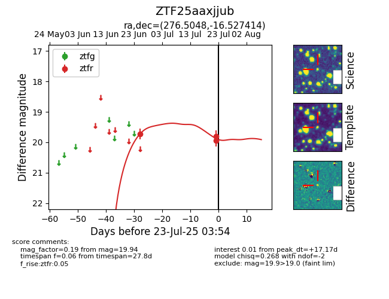

Target ZTF25aaxjjub at 2025-07-23 12:37, see:
FINK: fink-portal.org/ZTF25aaxjjub
Lasair: lasair-ztf.lsst.ac.uk/objects/ZTF25aaxjjub
ALeRCE: alerce.online/object/ZTF25aaxjjub
alt names
ZTF25aaxjjub (ztf,fink)
coordinates:
equatorial (ra, dec) = (276.5048,-16.52741)
galactic (l, b) = (15.3692,-2.02180)
photometry
last ztfr=19.94
3 ztfr detections
